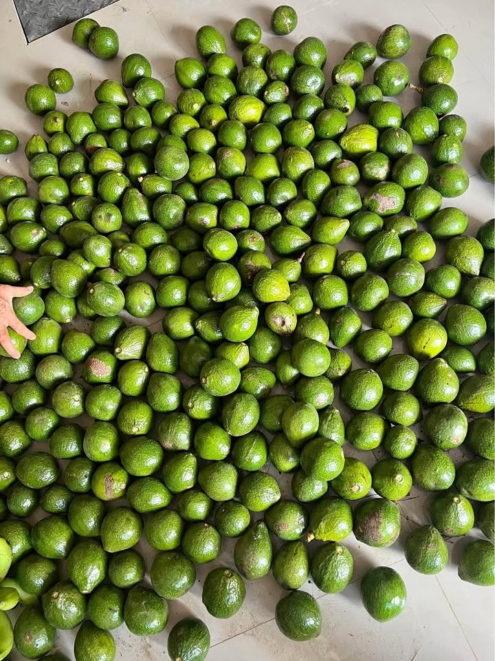

Precio desconocido 2.1083 ha

📍 Sector Chirapa, Santa Elena 📐 2.1083 hectáreas | 21,083 m² 📜 Inscrito en SUNARP 🗺️ Predio identificado en la Base Gráfica Registral 🌱 Una extensión ideal para desarrollar un proyecto agrícola e inversión ✅ Propiedad formalizada ✅ Documentación disponible para revisión ✅ Ubicación identificada y delimitada ✅ Más de 21 mil m² de terreno 💰 Precio de oportunidad. 📲 Solo compradores serios. Información por interno.